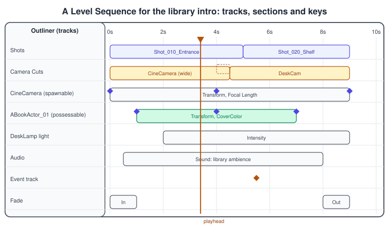
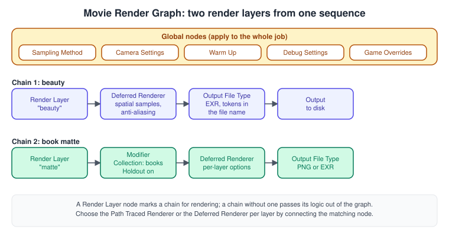
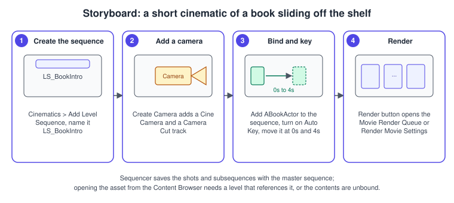
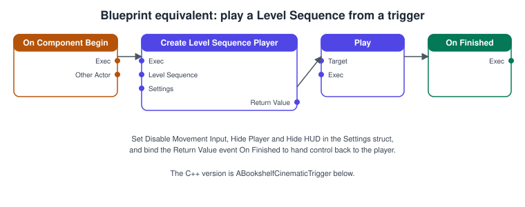

Sequencer Cinematics
|
This content was generated with the assistance of AI and should be verified against the official documentation before being relied on in production. |
A cinematic is a piece of the game that is directed rather than played: the camera moves on a planned path, a book slides off the shelf at a chosen moment, the desk lamp brightens, a sound starts. Sequencer is Unreal Engine’s multi-track editor for this. You add tracks that reference actors, characters, cameras and effects, you place sections and keyframes on a timeline, and the result is stored in an asset that can be played in the editor, played from gameplay, or rendered to image sequences and video. Sequencer replaced Matinee, which UE4 had already deprecated; Matinee is not part of Unreal Engine 5.
The facts on this page were checked in November 2026 against the Unreal Engine 5.8 documentation (5.8 was released on 2026-06-17, and the latest hotfix found is 5.8.4). Sequencer and the Movie Render Graph run in the editor on Windows, macOS and Linux; playback of a sequence
works on every platform Unreal packages for, while offline rendering is an editor workflow. In the running example this page builds LS_BookIntro, a short opening shot of L_Library in which a book slides out of AShelfActor while a camera pushes in, and plays it from a trigger in C++. The model is the shared
bookshelf.glb. Control Rig animation on timelines is introduced in Control Rig and Motion Matching; the cinematic cameras share their components with
Post-Processing and Cameras.
Level Sequence asset and Level Sequence Actor
Two objects work together, and mixing them up is the most common beginner confusion.
-
The Level Sequence asset lives in the Content Browser and stores the data: tracks, bindings, sections, keyframes, cameras and animations. It is a normal asset that can be referenced, soft-referenced and migrated.
-
The Level Sequence Actor lives in a level and acts as the container that binds the asset to that level and plays it. Its Level Sequence property references the asset. Playing a sequence from code or Blueprint creates such an actor on demand (see the C++ example).
The Level Sequence Actor has settings in two groups:
| Setting | What it does |
|---|---|
Auto Play |
Starts the sequence when the level starts. |
Loop |
None, indefinite or a fixed count. |
Play Rate, Start Offset, Random Start Time |
Speed multiplier, shift of the start time, and a random start inside the range. |
Restore State |
Puts the animated objects back as they were when the sequence ends. |
Pause at End |
Holds the last frame instead of stopping. |
Disable Movement Input, Disable Look At Input |
Stops the player moving or looking while the sequence plays. |
Hide Player, Hide Hud |
Hides the player pawn and the HUD during the cinematic. |
Disable Camera Cuts |
Turns the Camera Cuts track off so the sequence no longer controls the camera. |
To create a sequence use Cinematics > Add Level Sequence in the Level Editor toolbar, or Add/Import > Animation > Level Sequence in the Content Browser, or drag a Level Sequence Actor from the Cinematic category of Place Actors and drop the asset on its Level Sequence property. Open the editor from the Cinematics dropdown, with the actor’s Open Level Sequence button, by double-clicking the asset, or with Window > Cinematics > Sequencer. Opening an asset from the Content Browser needs a level that references it; otherwise its contents are unbound.
The Sequencer editor

The window has an Outliner on the left that lists the sequence’s tracks (each represents an actor, camera, character, audio or effect), and a Timeline on the right with a horizontal region per track. A track holds sections, and sections hold keyframes or other data; a media section, for example, shows its player and file information. The elements you use constantly:
-
Playback range: bounded by a green start marker and a red end marker. Set them at the playhead with the
[and]keys or from the playback controls, and toggle looping there. A selection range can define a looping region. -
Auto Key creates a key whenever you change a keyable property or transform in the viewport. Next and Previous Keyframe step through the keys of the selected track, Keyframe Options set default tangents and Snapping constrains keys to the grid.
-
Curve Editor, opened from the toolbar, fine-tunes keyframes and tangents.
-
Breadcrumbs show the current sequence and navigate between a master sequence and its shots. Save also stores the subscenes and shots.
-
Create Camera adds a Cine Camera Actor and a Camera Cut track that references it, unless one exists.
-
Render opens Render Movie Settings, or the Movie Render Queue if that plugin is enabled.
Source: Sequencer Cinematic Editor
Tracks and sections
A track animates one thing about an object, or one global thing about the sequence. Typical tracks are: Transform (location, rotation, scale of an actor or component), Property tracks (any keyable property, for example a light’s intensity or a scalar material parameter such as CoverColor), Skeletal Animation (plays an animation asset on a skeletal mesh), Control Rig (animates a rig’s controls),
Audio, Event (triggers a named event or a function in the sequence’s Director Blueprint), Fade, Visibility, Camera Cut, Shots and Subsequence. The Sequencer Tracks reference in the documentation describes each type.
Sections can overlap on many tracks, and when they do their values blend according to the section’s blend type: absolute sections replace the value, additive sections add to it, and relative sections offset from the value at the start of the section. Weights and ease-in and ease-out curves on a section control the blend. Use additive or relative sections when a cinematic must start from wherever a gameplay object currently stands.
Source: Sequencer Cinematic Editor
Bindings: possessable and spawnable
A track that refers to an object needs a binding. There are two kinds.
| Aspect | Possessable | Spawnable |
|---|---|---|
What it is |
An actor or component that already exists in the level; the sequence owns its animatable properties while it plays. |
An actor or component that exists only while the sequence is playing; the sequence creates it from a stored template. |
Lifetime |
The level’s. |
The sequence’s. The Spawned Object Owner setting controls it; by default it lasts for the current sequence, and Root Sequence extends it to the master sequence. |
Typical use |
The placed shelf, the real |
Cameras, temporary props, a stand-in character. |
Conversion |
Can be converted to a spawnable. |
Can be converted to a possessable. |
The older Sequence Recorder created spawnables by default, and its Record to Possessable option wrote into level-owned actors instead. A project preference, Create Spawnable Cameras, decides whether the toolbar camera button makes a spawnable or a possessable camera. The 5.8 release notes add automatic Actor Reference tracks for spawnables, and a Completion Mode for Actor Reference tracks.
Cameras and the Camera Cut track
The Camera Cut track decides which camera the viewer sees at each time. Add it with Add Track (+) > Camera Cut Track, or press the Camera button in the toolbar, which also creates a spawnable Cine Camera Actor bound to it. To use a camera that is already in the level choose Add Track (+) > Actor To Sequencer > Camera Actor.
-
Binding cameras: click Add Camera (+) in the track and pick an entry under Existing Bindings or New Binding. Turn on Camera Lock to look through the active camera in the viewport.
-
Cutting: move the playhead, click Add Camera (+) and choose the target camera to create a cut at that time; drag section edges to retime cuts. By default cuts have no gaps or overlaps.
-
Blending: right-click the track and enable Can Blend, then overlap sections to blend between cameras, or drag a section’s upper corner to blend to or from gameplay. Lock Previous Camera keeps the outgoing camera from switching during a blend from gameplay.
-
The documentation advises against building a full-length sequence with many cameras and cuts in one flat sequence; use shots instead.
The Cine Camera Actor behaves like a physical camera (filmback, focal length, aperture, focus distance). Its properties, depth of field and post-process settings are shared with the camera components described in Post-Processing and Cameras.
Source: Cinematic Camera Cut Track
Shots and master sequences
For anything longer than a few seconds, build a master sequence that holds shots, each a subsequence in a Shots track, and cut and trim the shots on the master timeline. This is non-linear editing: each shot has its own cameras and animation, can be worked on by a different person, can be retimed or reordered without touching its internals, and can be rendered alone. In the figure above
Shot_010_Entrance and Shot_020_Shelf are two such shots. The Subsequence track does the same job for sections that are not shots (for example a reusable "book falls" action), and the 5.8 release notes add timeline templates that can be nested as subsequences.
Source: Sequencer Cinematic Editor
Recording: Take Recorder
Take Recorder captures gameplay animation, live performances and other sources into a sequence. Start it from its window or with the record button of the Sequencer playback controls (which records the selected actors into the current sequence without opening the window); stopping with the button or Esc saves the take.
-
A source is recorded only if it has both a recorder and a matching track that Sequencer can play; any keyframable property can be recorded, a property that cannot be keyed cannot be recorded.
-
Review Last Recording opens the take in Sequencer. Auto Lock locks the take after recording; unlock it with the lock button in the Sequencer toolbar.
-
Countdown delays the start. Record Sources Into Sub Sequences puts each source in its own subsequence embedded in the root sequence, so you can swap takes per source.
-
The older Sequence Recorder has been deprecated since 4.24 in favour of Take Recorder.
The 5.8 release notes add that actors can stay referenced and parented to spawnables through recording.
Source: Take Recorder in Unreal Engine
Animation in Sequencer: Control Rig and Animation Mixing
Skeletal characters are animated by a Skeletal Animation track (an animation asset per section) or by a Control Rig track whose controls you key by hand or bake from a clip with Bake To Control Rig. To blend an Animation Blueprint with a sequence, see Epic’s page on blending Animation Blueprints with Sequencer. The 5.8 release notes list two relevant changes: Control Rig now uses ECS evaluation by default in Sequencer, with a legacy fallback option, and Animation Mixing in Sequencer is Experimental. Animation Mixing builds on 5.6 work on gameplay-to-cinematic transitions and lets artists layer and mask character animation inside Sequencer, without a separate Animation Blueprint or slots: mixers feed Animation Blueprint slots, layers combine skeletal animation and Control Rig input by priority, blend masks select bones and curves, and transitions such as cross-fades are available. The Anim Mixer plugin’s page advises caution when shipping with it.
Rendering: Movie Render Queue and Movie Render Graph
Real-time playback is for the game; for trailers and pre-rendered scenes you render offline. The Render button opens Render Movie Settings, or the Movie Render Queue when the plugin is enabled. The Movie Render Graph (MRG) is the node-based successor of the Movie Render Queue’s setting lists, and the 5.8 release notes label it Production Ready. Epic describes it as more flexible and accessible than the Movie Render Queue, because a node layout suits layered rendering where many settings differ per render layer.

| Node | Role |
|---|---|
Render Layer |
Marks a chain for rendering. A chain without one passes its logic out of the graph, which is useful for pipeline tools and subgraphs. |
Deferred Renderer, Path Traced Renderer |
The render path of a layer; connect the matching node, and the choice can differ per layer. Properties include Spatial Sample Count, AntiAliasing Method and Render Show Flags (deferred), and Spatial Sample Count, Denoiser and Reference Motion Blur (path traced). |
Output File Type nodes |
Format per chain: PNG, JPG, BMP, EXR, multilayer EXR, WAV, Apple ProRes and Avid DNxHR movies. The file name holds tokens for the sequence name, layer name and frame number by default. |
Sampling Method (global) |
Sets the temporal sample count for the whole job; spatial samples are set per layer. |
Camera Settings (global) |
Shutter timing and overscan. |
Warm Up |
Its own node, with an optional per-layer override of the warm-up frame count. |
Modifier and Collection |
A Collection groups actors by conditions (actor, tag, name, type, layer, folder, sublevel, data layer, spawnable); a Modifier applies Is Hidden, Cast Shadows, Cast Shadows While Hidden, Affect Indirect Lighting While Hidden or Holdout to it. Holdout punches a black hole in the layer’s RGBA, which is how a matte of the books is made. |
UI Renderer |
Includes UMG widgets, as a separate layer or composited into the final image. |
Debug Settings, Game Overrides |
Insights trace and render dock capture; project overrides that exist in the graph by default. Deleting or disconnecting Game Overrides removes its control of the render. |
The transition page lists what the Movie Render Graph did not support at the time of writing: nDisplay rendering, high resolution rendering, the Apple ProRes plugin, Final Cut Pro XML, the prestreaming recorder and 32-bit post-process material rendering. Check the current page before choosing it for a pipeline that needs those.
Procedure: build LS_BookIntro

-
Open
L_Library. In the Level Editor toolbar choose Cinematics > Add Level Sequence, save it asLS_BookIntroin the Content Browser and let Sequencer open. Source: Unreal Engine Sequencer Movie Tool Overview -
Click Create Camera in the Sequencer toolbar. A Cine Camera Actor and a Camera Cut track appear; turn on Camera Lock and place the camera in front of
AShelfActor. Source: Cinematic Camera Cut Track -
Select the
BP_Bookinstance you want to animate in the level and add it to the sequence (Add Track (+) > Actor To Sequencer, or drag it from the Outliner). It becomes a possessable binding. -
Set the playhead to 0 s, enable Auto Key, and keep the book at its slot. Move the playhead to 4 s and move the book out along the shelf board; keys appear on the Transform track. Open the Curve Editor and soften the tangents. Source: Sequencer Cinematic Editor
-
Key the camera’s position at 0 s and 4 s to push in, and set the playback range markers to 0 s and 4 s with the
[and]keys at the corresponding playhead positions. -
Click Render in the toolbar. In Render Movie Settings (or the Movie Render Queue, or a Movie Render Graph asset) choose the output format and folder and start the render. Source: Movie Render Graph Nodes
Complete C++ example for the Bookshelf
ABookshelfCinematicTrigger is a box in the level. When the player pawn overlaps it, the actor loads LS_BookIntro (a soft reference, so the sequence is not loaded until needed), creates a Level Sequence Player, hides the player and the HUD, disables movement input, plays the sequence and restores control when it finishes.
Add "LevelSequence" and "MovieScene" to PublicDependencyModuleNames in Bookshelf.Build.cs.
// BookshelfCinematicTrigger.h
#pragma once
#include "CoreMinimal.h"
#include "GameFramework/Actor.h"
#include "Engine/EngineTypes.h"
#include "BookshelfCinematicTrigger.generated.h"
class UBoxComponent;
class ULevelSequence;
class ULevelSequencePlayer;
class ALevelSequenceActor;
/** Plays a Level Sequence once when the local player enters the box. */
UCLASS()
class BOOKSHELF_API ABookshelfCinematicTrigger : public AActor
{
GENERATED_BODY()
public:
ABookshelfCinematicTrigger();
protected:
virtual void BeginPlay() override;
UFUNCTION()
void HandleOverlap(UPrimitiveComponent* OverlappedComponent, AActor* OtherActor,
UPrimitiveComponent* OtherComp, int32 OtherBodyIndex, bool bFromSweep,
const FHitResult& SweepResult);
UFUNCTION()
void HandleSequenceFinished();
/** The sequence to play, for example /Game/Cinematics/LS_BookIntro. */
UPROPERTY(EditAnywhere, Category = "Cinematic")
TSoftObjectPtr<ULevelSequence> Sequence;
UPROPERTY(VisibleAnywhere, Category = "Cinematic")
TObjectPtr<UBoxComponent> TriggerBox;
private:
UPROPERTY(Transient)
TObjectPtr<ULevelSequencePlayer> Player;
UPROPERTY(Transient)
TObjectPtr<ALevelSequenceActor> SequenceActor;
bool bPlayed = false;
};// BookshelfCinematicTrigger.cpp
#include "BookshelfCinematicTrigger.h"
#include "Components/BoxComponent.h"
#include "GameFramework/Character.h"
#include "LevelSequence.h"
#include "LevelSequenceActor.h"
#include "LevelSequencePlayer.h"
#include "MovieSceneSequencePlaybackSettings.h"
#include "Bookshelf.h" // declares the LogBookshelf category
ABookshelfCinematicTrigger::ABookshelfCinematicTrigger()
{
PrimaryActorTick.bCanEverTick = false;
TriggerBox = CreateDefaultSubobject<UBoxComponent>(TEXT("TriggerBox"));
SetRootComponent(TriggerBox);
TriggerBox->SetBoxExtent(FVector(200.0, 200.0, 100.0));
TriggerBox->SetCollisionProfileName(TEXT("OverlapOnlyPawn"));
TriggerBox->SetGenerateOverlapEvents(true);
}
void ABookshelfCinematicTrigger::BeginPlay()
{
Super::BeginPlay();
TriggerBox->OnComponentBeginOverlap.AddDynamic(this, &ABookshelfCinematicTrigger::HandleOverlap);
}
void ABookshelfCinematicTrigger::HandleOverlap(UPrimitiveComponent* OverlappedComponent, AActor* OtherActor,
UPrimitiveComponent* OtherComp, int32 OtherBodyIndex, bool bFromSweep, const FHitResult& SweepResult)
{
const ACharacter* Character = Cast<ACharacter>(OtherActor);
if (bPlayed || !Character || !Character->IsLocallyControlled())
{
return;
}
ULevelSequence* LoadedSequence = Sequence.LoadSynchronous();
if (!LoadedSequence)
{
UE_LOG(LogBookshelf, Warning, TEXT("%s has no Level Sequence assigned."), *GetNameSafe(this));
return;
}
FMovieSceneSequencePlaybackSettings Settings;
Settings.bDisableMovementInput = true;
Settings.bDisableLookAtInput = true;
Settings.bHidePlayer = true;
Settings.bHideHud = true;
Player = ULevelSequencePlayer::CreateLevelSequencePlayer(this, LoadedSequence, Settings, SequenceActor);
if (Player)
{
bPlayed = true;
Player->OnFinished.AddDynamic(this, &ABookshelfCinematicTrigger::HandleSequenceFinished);
Player->Play();
}
}
void ABookshelfCinematicTrigger::HandleSequenceFinished()
{
UE_LOG(LogBookshelf, Log, TEXT("Cinematic finished."));
if (SequenceActor)
{
SequenceActor->Destroy();
}
}Source: Sequencer Cinematic Editor
The Blueprint equivalent is the graph in the figure: On Component Begin Overlap on the box, Create Level Sequence Player with a playback settings struct, then Play, with the On Finished event of the returned player to hand control back.

Sequencer plays locally. In a multiplayer game a Level Sequence Actor in the level can be driven by the server through replication of its sequence player, but a purely cosmetic cinematic is usually played independently on each client, as the IsLocallyControlled check above does; see
Networking and Replication.
Matinee, Cascade and the old tools
Matinee was deprecated in UE4 and Sequencer fully replaces it in Unreal Engine 5. The Matinee to Sequencer conversion described in UE4-era documentation was a plugin that converted a Matinee actor of a level into Sequencer assets; it supported move, animation, event, sound, property, visibility, director, fade and slomo tracks, and had to be repeated for each level because Matinee stored its data per level. Treat that as historical: for new work, build in Sequencer, and check the current documentation before relying on a converter in UE 5.8.
Common mistakes
-
Opening a Level Sequence asset in a level that does not reference it. The tracks show as unbound; add a Level Sequence Actor or open it from the Cinematics menu.
-
Animating a placed actor as a spawnable, or a camera as a possessable by accident. Check the binding type in the context menu and convert if needed; a spawnable exists only while the sequence plays.
-
Leaving the player controlling the camera. If the Camera Cuts track is disabled on the Level Sequence Actor (Disable Camera Cuts), the sequence will not take over the view.
-
Forgetting Restore State. Without it animated objects stay where the sequence left them, which may be what you want or a bug.
-
One flat sequence with dozens of cuts. Split it into shots in a master sequence.
-
Hard references to every cinematic. Reference
LS_BookIntrothrough a soft pointer, as above, so it loads when needed. -
Playing a cinematic on the server only. The sequence player is local; a dedicated server has no screen.
-
Not unlocking a take. A take locked by Auto Lock cannot be edited until the lock button is toggled.
-
Expecting the Movie Render Graph to support every Movie Render Queue feature. Check the unsupported list before switching a pipeline.
-
Rendering without warm-up. Temporal effects and physics need warm-up frames; use the Warm Up node.
Performance notes
-
A sequence evaluates every track of every active section each frame. Remove unused tracks and sections, and keep very long sequences as shots so only the active shot evaluates.
-
Audio, Niagara and Control Rig tracks add their own cost; Control Rig evaluates through ECS by default in 5.8.
-
Soft-reference cinematics and load them just before they play, because a Level Sequence pulls in its bound assets.
-
For offline rendering, spatial samples cost render time linearly and temporal samples cost it per frame; raise them only for the final render and use a deferred renderer for previews.
-
Pause the Sequencer clock with the game if the cinematic must freeze in menus; 5.8 adds an option for that.
-
General guidance is in Profiling and Optimization.
What changed recently
| Version | Change |
|---|---|
UE4 to UE5 |
Matinee was deprecated in UE4 and is replaced by Sequencer; Take Recorder replaced the Sequence Recorder (deprecated in 4.24). |
UE 5.6 |
Work on gameplay-to-cinematic transitions that Animation Mixing builds on. |
UE 5.8 (2026-06-17) |
Movie Render Graph is Production Ready; Animation Mixing in Sequencer is Experimental; Control Rig uses ECS evaluation by default; Bake Transform in the binding menu; automatic Actor Reference tracks for spawnables; Add Mark at Playhead; an option to pause the Sequencer clock with the game; audio sections can play until finished and repeat one-shots; subtitle sections can be resized; control bus tracks for audio; SequencerTools, a toolset for AI-driven sequence creation and editing; Chaos caching per component in Sequencer. |
Source: Unreal Engine 5.8 Release Notes
Where the books are outdated
The books cover cinematics in these places: Learning Unreal Engine Android Game Development by Nitish Misra (chapter 6), Unreal Engine: Game Development from A to Z by Joanna Lee, John P. Doran and Nitish Misra (module 1 chapter 7, module 2 chapter 5 and module 3 chapter 6), and Unreal Engine 5 Game Development with C++ Scripting by Zhenyu George Li and E. Wyn Roberts (chapter 12).
| Book and chapter | Era of the book | What is current in UE 5.8 |
|---|---|---|
Misra ch. 6; Lee, Doran and Misra (module 1 chapter 7, module 2 chapter 5, module 3 chapter 6) |
Unreal Engine 4.4 to 4.10, when Matinee was the cinematic tool |
Matinee was deprecated in UE4 and is replaced by Sequencer in Unreal Engine 5. Use Sequencer with Level Sequences, the Camera Cut track and shots, and render with the Movie Render Queue or the Movie Render Graph (Production Ready in 5.8). |
Li and Roberts ch. 12 |
Unreal Engine 5.0 only |
The Sequencer concepts hold. Newer in 5.8: the Movie Render Graph, Animation Mixing (Experimental), ECS-evaluated Control Rig in Sequencer, and the playback settings that hide the player and HUD, shown in the C++ example above. |
See also
-
Control Rig and Motion Matching: Control Rig tracks, baking and the rig events.
-
Post-Processing and Cameras: Cine Camera properties, depth of field and post-process settings.
-
Animation Blueprints and State Machines: the Animation Blueprints that Sequencer blends with.
-
Actors and Components: actors that sequences possess or spawn.
-
Lighting, Lumen and MegaLights: animating lights such as the desk lamp.
-
Niagara VFX: effects triggered from tracks.
-
Audio and MetaSounds: audio tracks and control buses.
-
Networking and Replication: local versus replicated playback.
-
Game Loop and Frame Timing: time stepping that sequence playback sits on.
-
Transparency, Blending and Post-Processing: engine-neutral background for the render passes and holdouts.
-
Timeline and Cutscenes: the Unity counterpart.